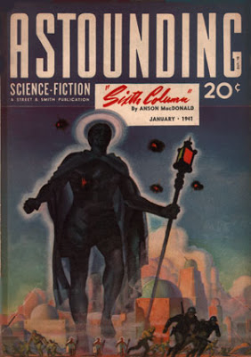

(Y)ou can forget all that dreck about 4GW and RMA. They are just Madison Avenue terms designed to extract a few more bucks from the taxpayers' pockets. War has always been about will. Weapons, tactics, strategies are just tools used to affect the enemies will. Of course the ulitmate tool for that is a nuclear weapon. Nothing effects an opponent's will more than killing him. And rumor has it that the long term effects are just as good as the short term ones. I assure you Custer will never again burn any Indian villages. -- Tomanbeg on Strategy Page Military Science Fiction Discussion Board, 26 Sept 2003
To fight and conquer in all your battles is not supreme excellence; supreme excellence consists in breaking the enemy's resistance without fighting. -Sun Tzu, the Art of War
In January, 1941, after the fall of France and almost a full year before the Japanese attack on Pearl Harbor, a small circulation magazine called Astounding Science Fiction began a serialized story (continued in the February and March issues) credited to "Anson MacDonald." It was entitled "Sixth Column."
Its author was in fact Robert Anson Heinlein, from an original idea given to him by Astounding's editor, John W. Campbell. For the time, it was an incredible piece of work, and amazingly it still stands the test of time on very many levels. Sixth Column was later reissued in hardcover in 1949.
Yet, it was one of Heinlein's most difficult projects to write, because it was a hand-off story concept and Campbell's original story idea was light on specifics -- especially science and military -- and long on anti-oriental racism. It was so difficult that Heinlein never again accepted someone else's idea as the basis for one of his novels. As Heinlein recalled:
Writing Sixth Column was a job I sweated over. I had to reslant it to remove racist aspects of the original story line. And I didn't really believe the pseudoscientific rationale of Campbell's three spectra — so I worked especially hard to make it sound realistic.
In Sixth Column (also known under the title The Day After Tomorrow)the United States has been conquered by the PanAsians, a combination of Chinese and Japanese, who have also taken the Soviet Union and India. In the process, they have developed a credo:
"Three things only do slaves require: work, food, and their religion."
As Wikipedia notes,
"The book is notable for its frank and controversial portrayal of racism. The conquerors regard themselves as a chosen people predestined to rule over lesser races, and they refer to white people as slaves. . . . They require outward signs of respect, such as jumping promptly into the gutter when a member of the chosen race walks by, and the slightest hesitation to show the prescribed courtesies earns a swagger stick across the face."
Yet the most heroic action taken by any character in the book is made by Frank Mitsui, an Asian American whose family was murdered by the invaders because they did not fit in the new PanAsiatic racial order. (Frank's wife was black and his kids of mixed-race.) This was a daring plot element at the time.
And Heinlein does not whitewash his heroes either. The Americans return their conquerors' racism by often referring to them as "flat faces", "slanties," and "monkey boys". For this reason, Heinlein's Sixth Column has been denounced as racist by some left-wing critics. It is not. It was, for its time, about as explicitly anti-racist as you could expect.
The Citadel, a top secret research facility hidden in the Colorado mountains is the last remaining outpost of the United States Army after its defeat by the PanAsians. Major Ardmore, sent by the War Department to convey final orders for independent resistance to the lab, discovers that a weapons development accident has killed all but six of the facility's staff of over 300. The survivors are demoralized and want to quit. Ardmore takes command and soon the survivors learn the principles behind the weapon and how to control it. What they lack, Ardmore is painfully aware, is numbers to wield it in battle but first and foremost, an intelligence network to help them plan a campaign and target the weapon. Today we call this "Intelligence Preparation of the Battlefield." Ardmore finds his intelligence operative in a hobo named Jeff Thomas, a hobo who wandered into the Citadel as the war was drawing to a close.
(Heinlein's characters draw their strengths from their unlikely life experiences. Thomas has learned from ten years as an itinerant laborer how to move without being seen, how to blend in, how to adapt to changing circumstances and he has the support network of other hobos. In the ruins of civilization, it is those who had the least to lose that survived the best. Perhaps, Heinlein hints, because their minds were already adjusted to dealing in adversity. Likewise, Ardmore is not a West Point trained officer. He is a marketing executive swept up in the war emergency. But this is key to his ability to think unconventionally and find a solution to the problems at hand.)
Robert Anson Heinlein, United States Naval Academy, 1929.

Inextricably linked with the concerns of pitiful numbers and lack of intelligence is the fact that the PanAsians make the Nazis look like pikers when it comes to retaliation against innocents for any show of defiance.
Everywhere (Thomas) found boiling resentment, a fierce willingness to fight against the tyranny, but it was undirected, uncoordinated, and in any modern sense, unarmed. Sporadic rebellion was as futile as the scurrying of ants whose hill has been violated. PanAsians could be killed, yes, and there were men willing to shoot on sight, even in the face of the certainty of their own deaths. But their hands were bound by the greater certainty of brutal multiple retaliation against their own kind. As with the Jews of Germany before the final blackout in Europe, bravery was not enough, for one act of violence against the tyrants would be paid for by other men, women and children at unspeakable compound interest. -- p. 32
Once Ardmore is better informed about the conditions outside the Citadel, the more difficult his problem appears. The perfection of the weapon system leads others within the Citadel to want to use it immediately. Ardmore refuses.
Any way he looked at it, simple, straightforward military use of the new weapons was not expedient. Brutal frontal attack was for the commander who had men to expend. General U.S. Grant could afford to say, "I will fight it out on this line if it takes all summer," because he could lose three men to the enemy's one and still win. Those tactics were not for the commander who could not afford to lose ANY men. For him it must be deception, misdirection -- feint, slash and run away -- "and live to fight another day." The nursery rhyme finished itself in his mind. That was it. It had to be something totally unexpected, something that the PanAsians wouLd not realize was warfare until they were overwhelmed by it.
It would have to be something like the "fifth columns" that destroyed the European democracies from within in the tragic days that led to the final blackout of European civilization. But this would not be a fifth column of traitors, bent on paralyzing a free country, but the antithesis of that, a sixth column of patriots whose privilege it wouod be to destroy the morale of invaders, make them sfraid, unsure of themselves.
And misdirection was the key to it, the art of fooling! -- pp. 56-57
Here we have Sun Tzu's dictum embraced, rather than the attrition warfare expressed by Tomanbeg above. Time and again in the book, the principles of maneuver warfare and 4GW leap from the page.
He realized suddenly that he was thinking of the problem in direct terms again, in spite of his conscious knowledge that such an approach was futile. What he wanted was psychological jiu-jitsu -- some way to turn their own strength against them. Misdirection -- that was the idea! Whatever it was they expected him to do, don't do it! Do something else. -- p. 199
And this was written in 1940!
As the campaign of psy-war and misdirection continues, Heinlein enunciates another maneuver warfare principle: subordinate commanders, right down to a fire team corporal, are to be permitted and encouraged to think for themselves and act decisively:
Thomas took the report and read it, then nodded agreement. . . "Perhaps we should have given more detailed instructions."
"I don't think so. Detailed instructions are the death of initiative. This way we have them all striving to think up some particularly annoying way to get under the skins of our . . . lords. I expect some very amusing and ingenious results." -- pp. 227-228
Finally, as the campaign enters its final hours, there is this:
How much longer, Chief?" asked Thomas.
"Not very long. We'll let 'em talk long enough for them to know something hellacious is happening all over the country. Now we've cut 'em off. That should produce a feeling of panic. I want to let that panic have time to ripen and spread to every Pan Asian in the country. When I figure they're ripe, we'll sock it to 'em!"
"How will you tell?"
"I can't. It will be on hunch, between ourselves. We'll let the little darlings run around in circles for a while, not over an hour, then give'em the works."
Dr. Brooks nervously attempted to make conversation. "It certainly will be a relief to have this entire matter settled onde and for always. It's been very trying at times ---" His voice trailed off.
Ardmore turned on him. "Don't ever think we can settle things 'once and for always.'"
"But surely -- if we defeat the PanAsians decisively -- "
"That's where you are wrong about it." The nervous strain he was under showed in his brusque manner. "We got into this jam by thinking we could settle things once and for always. . . We should have known better; there were plenty of lessons in history. The old French Republic tried to freeze events to one pattern with the Versailles Treaty. When that didn't work, they built the Maginot Line and went to sleep behind it. What did it get them? Final blackout!"
"Life is a dynamic process and can't be made static. '--- and they all lived happily ever after' is fairy tale stupidity." -- pp. 231-232
"The price of liberty is eternal vigilance," Heinlein tells us in Sixth Column, along with presenting a marvelous tale instructing us in the principles of maneuver warfare and 4GW. And he wrote it in 1940. That in itself is "Amazing."
Get it.
Read it.
(Correction: You can't find Sixth Column at most local bookstores, in fact it's out of print. As some of the posters below onserve, you can find it on the Net but it ain't cheap. My apologies. I thought the receipt inside the book (from last year at Books-A-Million, belonged to the volume I have. It didn't. I ahve the fifth Naen printing, 1999. Oops. However, if you can find it, it is worth it.)

18 comments:
As I recall, the plot of sixth column relies on a technical weapon breakthrough large enough to be magic. If today you give any group of a couple hundred fighters weapons like a truckload of fire and forget bumblebee sized poisoned flying missiles, they too will prevail. I consider this resistance to succeed due do the imbalance of weapons systems power, not due to the organization of the resistance army. Proof: replace the magic weapon with a rail car of guns and the plot doesn't work.
The point is not the silly sci-fi weapons. The point is the principles of warfare enunciated by Heinlein. For a traditionally-educated ex-naval officer, they are absolutely atypical and brilliant.
The tools do not, in the end, matter. What matters is the mind that wields them. Heinlein had that down pat. And in 1940 no less.
I'm a regular at every local bookstore everywhere I've lived, and I've never seen this in print.
Also Tomanbeg is right and you are wrong. 4GW to the extent that it contains useful concepts is useful tactically only, and in that sense there is nothing tremendously new there - Nathan Bedford Forrest or Napoleon Bonaparte, or even Alexander, would not be surprised by any of it. Strategically, the bottom line is that the enemy will to resist must be destroyed; that has always been the case and always will be. There's no way around that. The usefulness of 4GW-style methods in accomplishing that destruction is best described as "necessary but insufficient". It may weaken the enemy structure, but you still need a hammerblow to shatter it properly. Maneuver alone will never do that; 4GW, or anything like it, has never and will never win by itself against a determined enemy. Remember, the US _won_ the first two Vietnam wars, most particularly the guerrilla side of it. The loss in 1975 came to a conventional armored invasion that the US lacked the will to oppose. (And before anyone brings up Hezbollah: Israel was and remains deeply divided on the extent and purpose of military actions against its neighboring enemies. The willpower aspect has not been there for decades.) Claims that a "new way" has been found that invalidates everything our ancestors ever learned have always been with us and have always been false. New tactics and weapons to implement the old ways, yes. But new ways? No.
Mike,
So-called 4th Gen. warfare is nothing more than the oldest form of warfare in the world — Guerrilla Warfare.
Robert B. Asprey wrote a 3 vol. set called "War in the Shadows" which consists of 2 original volumes, and an updated volume. Its focus is understanding Vietnam in light of guerrilla warfare in history.
There are a number of other excellent books on the subject as well, but the account of guerrilla warfare I like best is where Abraham defeated 4 kings in a night attack and recovered Lot.
Sixth Column has been difficult to find for as long as I remember. I believe that too many "PC-sensitive" bookstores are just averse to the "yellow peril" aspect of it.
I'll admit I am new to studying 4GW, but I think Rollory misses some points.
The Mujahadeen never had a "hammer blow" which defeated the Russians. Their main objective of relentlessly hurting the Russians eventually resulted in the Red Army quitting and going back to Russia. Yes, it took years.
The tactics of Hamas and Hezbollah against Israel are effective because while the IDF is militarily stronger, Israel as yet does not have the will to do what is necessary.
Now when 4GW is applied to a domestic scenario, I don't really understand what the "4GW can't work" idea is based on.
Would partisans be likely to engage the US National Guard in a set piece battle in the SD Badlands? I doubt it. Will a tyrannical government nuke 1, or 2, or five "lost" cities? I just can't see it.
When things come to a full on civil war, they are fighting uphill, and we surround them.
If the Federals put 10,000 "suspects" into detention camps, there are 30,000 family members who are no longer supporters of the regime. If 100 strategic targets are eliminated or turned, the regime becomes tangibly weakened.
The loyalists do not need a hammer blow, they just need to stay alive and make the oppressing force retreat to their safe zones. Eventually, there will be no safe zones for forces hostile to the citizenry.
We are the prize, the cash cow to the statists if we are cooperative and compliant. When we have general strikes, when we no longer allow our patriotic sons to join the military, when the military no longer has dedicated volunteers, but rebellious, mutinous conscripts, oppression will become very expensive indeed.
What Anon said has merit. The weapon was like "magic" to all but those who were aware. Additionally, the means to weed out infiltrators was provided by the "magic" weapon. Truth serums, for those suspected of being traitors. That being said it is a very insightful book on thinking "outside" the box, and how effective it will be. My choice for a store to read deals with a society simalar to the one we now live in now, with every move followed, cataloged, cross reffrenced. The story is titled "Sam Hall" by Poul Anderson.
Definitely sounds like a good book.
The author did get some elements right. The Japanese were actually planning to invade the US, but their idea was to do it AFTER they completely genocided the Chinese and Korean race, hence from 1937-1941 they waged a bio-weapons campaign against Communist forces in the mountains, which they utterly failed, and cost them over 1/3rd of their entire army.
Re: Anonymous. Depends on HOW the railcar of guns is going to be used. If used for guerilla style sniping warfare, the enemy will learn over a period of time that invasion is just not worth it. A single Whitworth rifle completely messed up the Yankee chain of command at Spotsylvania Court House on May 20, 1864, and led to a chain of miscalculations that eventually led to Petersburg and the Crater. Sedgwick was a tactician, and had he not been given an early dirt nap in warm Virginia soil, he would have overwhelmed the Confederate trenches at Petersburg in the initial assault right after the mine was blown. See how one thing blossoms into another? Kind of like the butterfly effect, isn't it?
Thats why even in an age of technology, even if the technology is reduce-your-ass-to-dust lasers from a thousand miles away being employed casually and widely, marksmanship is still key in any war.
It's available from Amazon for $18.95.
Jim
OOPS...sorry for the typo on the price.
it's available "New or Used" starting at $8.50 on Amazon.com.
Need....More....Coffee....
I agree that Heinlein was a genius in several directions, but I don't think this plot works without the deus ex mechania weapons. Without the magic weapons, the defenders lose. Given ordinary weapons that could be acquired in reality, doing what the defenders do gets the defenders killed. This book is fiction, not science fiction.
Currently, many empires are collapsing due to financial and military overcommitment. This is a rare opening for competitors, but at what horrible cost? The business cycle of boom and bust is bad enough, but the cycle of boom and bust of nations is far worse. Both are man-made, an inherent property of political systems. Peace, freedom, and stability is only to be found by rejecting all political systems.
If the Federals put 10,000 "suspects" into detention camps, there are 30,000 family members who are no longer supporters of the regime.
That's not what happened in Germany. When word leaked back of what was happening in the camps, the people kept peacefully getting on the boxcars. I don't know what the passive victims were thinking. Maybe they had suicidal levels of learned helplessness/depression/submission. But my point is that legal roundups have been tested by experiment, and they don't generate the outrage you claim. Currently, 1 in 100 Americans are in prison, but the lack of support this generates is so mild it barely even makes the Internet news. The current mainstream backlash to the drug war is due to cost of prisons, not moral outrage.
See how one thing blossoms into another? Kind of like the butterfly effect, isn't it?
You're misunderstanding what the butterfly effect means. The way chaos works is that some measurable value wobbles around within some region, and it's impossible to predict where the value will be within that region in the far future. One example of a chaotic system is a dripping faucet. It's impossible to predict to the millisecond when a drop will fall an hour from now. However, it's entirely predictable that the dripping will waste so many gallons an hour. In a political context, it's extremely hard to predict the names of future politicians; for example, two years ago everybody thought Hillary would win. But this lack of predictability doesn't invalidate all the objections libertarians make about government. If Hamilton had met with an accident, someone would have replaced him and substantially the same flavor of history would have unfolded. If this or that battle had gone one way or the other due to some tiny event, all the subsequent details would have been different, and all the broad overview would have been the same.
In this real world, a game-changing trend that is militarily interesting is that technology continues to get cheaper, smaller, more widely deployed, and more capable of being customized to exotic use in the garage. This true for video cameras, radio communication stations, machine tools, rapid prototyping, cryptographically secure communications of the free press, and in the near future I hope, electronic money. Chaos means we can't tell exactly when the next militarily interesting populist breakthrough will occur. But we know it will occur.
My wife and I have just about every word RAH published, including posthumously. I looked, and sure enough there's a copy of Sixth Column on the bookshelf. Heh.
Reading now....
BTW, our copy is the first Baen printing, dated Jan 1988.
Different cover art.
Wow, as much to say about the blog itself as there is to say about the comments. Where to start?
Well, I own this book, Sixth Column. Then again, I own a nearly complete set of Astounding and Analog magazines. I found it in a Baen Books edition just a few years ago. Many used book stores, including Amazon marketplace and Abebooks.com are likely to have a copy.
Chaos theory. Chaotic systems can be identified where small changes in initial conditions make huge changes in outcomes. The dripping faucet seems very regular in comparison. Weather is a much better example.
Suppose Hamilton had been killed in a duel? Oops, Hamilton was killed in a duel. And who rose up to replace him? EI DuPont sat on the board of the Second Bank and also sold a lot of gunpowder to the military, so presumably advocated in favor of lots of wars with the Indian nations. But nobody rose up to replace Hamilton, and the Second Bank renewal was vetoed by Andy Jackson.
A rail car of guns? Are these rifles or are they rocket propelled grenades with launchers?
The shoe is somewhat on the other foot. Americans are now occupying countries like Iraq and Afghanistan (and continuing to occupy Japan, Korea, Germany...). The torture scandal at Abu Ghraib strongly suggests that racism is not beyond the reach of American soldiers.
And the resistance continues. The resistance to Yankee occupation continued long after the war, until the Posse Commitatus act was passed. And in some cases even beyond that.
Resistance by Somalis to all attempts to force them to pay taxes to pay back the debts accumulated by the dictator who tortured and massacred them have been legendary. I think the UN is on its sixteenth attempt to install a government since 1991.
Iraq is occupied by not pacified. Afghanistan is neither pacified nor effectively occupied.
The powers that be are quite willing to slaughter as many people as they can get away with. What they have not demonstrated is any magical ability to conquer a well-armed people. That hasn't happened in Afghanistan under British, Soviet, nor American occupation.
Frankly, it is this willingness of armed people to fight for their freedom that makes me feel better about our future here in the USA. I've said it before, and I'm saying it now. There can be no peace without justice. There can be no justice without freedom. There can be no freedom without weapons.
read this when I was a youth, still remember bits and pieces, I'll have to get another copy and reread it.
Dr. D
paperbackswap still has copies.
"Magic Weapons", eh?
Check out http://www.gbppr.org/
-DOL
QUOTE The way chaos works is that some measurable value wobbles around within some region, and it's impossible to predict where the value will be within that region in the far future. One example of a chaotic system is a dripping faucet. It's impossible to predict to the millisecond when a drop will fall an hour from now. QUOTE
The butterfly effect that I was explaining about actually had to do with Sedgwick's snuffing it, and the Yankee uber-embarrassment at Petersburg. It was a directly correlational event. I agree with your statement about chaos, but we also have to consider the macroscale. For example, the way the universe is formed, from all the bubbles of hydrogen gas and subatomic particles, is a pure example of chaos. However, look at the universe today. Look at each and every star. It seems that all the stars in any given stellar system are no farther from each other than 10-20 light years away. Therefore, even in an atmosphere of chaos, there is a resemblance of order. We know that another new star CANNOT form within 2 light years of the Sun, because the Sun's gravitational field will scatter any cluster of gas and dust that might form within the region.
It`s in this torrent:
http://isohunt.com/torrent_details/197558709/Heinlein+Sixth+Column?tab=summary
And yes,it is well worth reading even if you are a panface.
Post a Comment